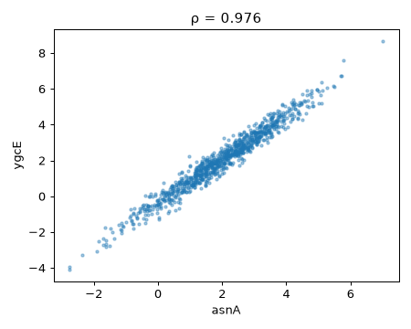
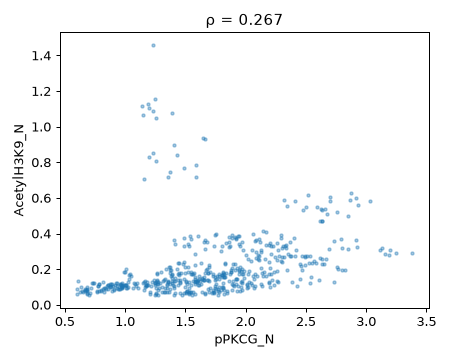
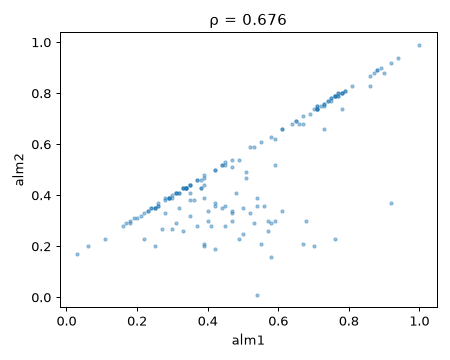
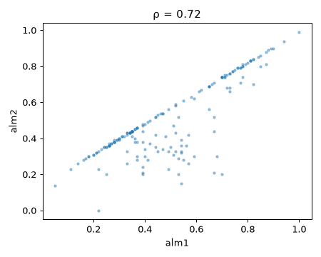
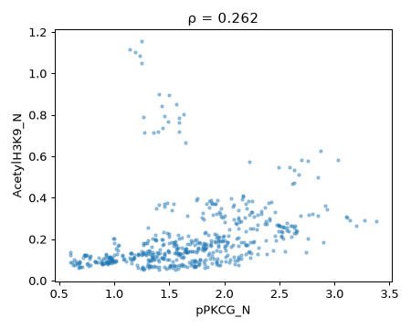
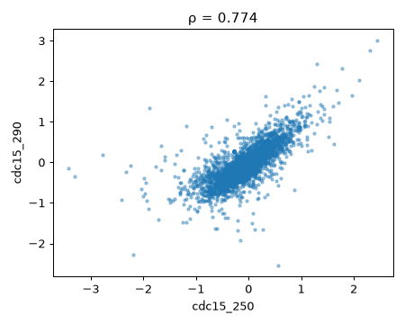
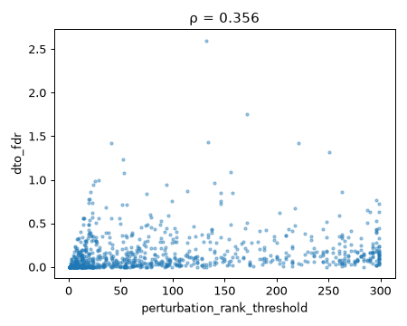
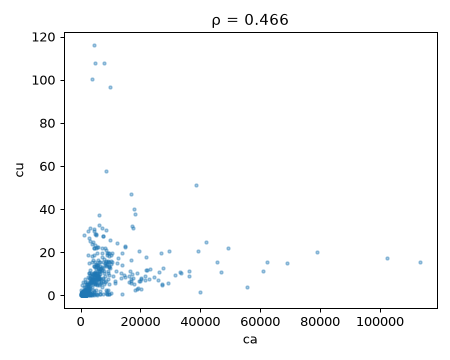

Sujets / Biologie et génomique / rapport
Rapport de nuit · 2026-11-07_0330_gene expression Biologie et génomique Quelles signatures moléculaires (gènes, protéines) distinguent les groupes biologiques, et lesquelles sont inattendues ?
7 novembre 2026 à 03:41 9 datasets analysés interprétation : gemini-3.5-flash-lite
Résumé (rédigé par le LLM à partir des calculs) L'analyse des datasets biologiques met en évidence des corrélations extrêmement fortes entre l'expression de certains gènes chez E. coli et de protéines dans le modèle murin, confirmant des co-régulations métaboliques ou des cascades de signalisation bien ancrées. D'autres relations observées dans les microbiomes aviaires suggèrent des interactions écologiques et nutritionnelles complexes entre nutriments et taxons microbiens. Enfin, la robustesse de ces liens sur des échantillons indépendants valide leur pertinence biologique sous-jacente.
Protocole : chaque dataset est coupé en deux moitiés fixes. Les observations sont cherchées sur la première puis revérifiées sur la seconde ; les hypothèses sont testées uniquement sur la seconde, jamais vue pendant l'exploration. Méthode
01 Hypothèses testéesProposées lors d'une nuit précédente, testées cette nuit sur la moitié de confirmation, puis corrigées pour le nombre de tests (Holm).
H33 Non concluante 0/6
Le lien entre fWidth: et fConc1: change-t-il selon le groupe class ? Test · Sous-groupe Le lien entre fWidth: et fConc1: change-t-il selon class ?
Dans MagicTelescope, la corrélation fWidth:~fConc1: vaut -0.80 pour « class: = h » contre -0.86 pour « class: = g » (écart 0.06, p = 1.1e-17). Attention : relation non linéaire ou valeurs extrêmes dans « class: = h » (Spearman ≠ Pearson) ; un modèle non linéaire (GAM, splines, log) serait plus adapté.
class: = g ρ −0.86 class: = h ρ −0.80 −1 0 +1 ρ de Spearman par groupe · moitié de confirmation p = 1.1×10−17 n = 6 191 + 3 315
1 Réel ✗ 2 Interprétable ✓ 3 Non trivial ✗ 4 Non artefactuel · 5 Nouveau ✗ 6 Généralisable · Détail de l'échelle (niveau 0/6) 1. Réel — non concluante2. Interprétable — variables nommées3. Non trivial — avis d'expert : A_TESTER_AUTREMENT4. Non artefactuel — non vérifié5. Nouveau — déjà connu6. Généralisable — non vérifiéLittérature · Déjà connu La séparation gamma-hadron par des caractéristiques d'images Tcherenkov (fWidth, fConc1) est un problème classique largement documenté dans la littérature MAGIC et VERITAS.
Articles proches (5) Avis critique (LLM) : à tester autrement Formulation : Correcte, formulation prudente utilisant le terme 'lien' pour des données observationnelles, mais la comparaison des coefficients de corrélation linéaires est insuffisante face à la non-linéarité détectée.Reformulation proposée : La structure de la relation entre fWidth et fConc1 diffère-t-elle selon la classe de particules (gamma 'g' vs hadron 'h') ?Diagnostic statistique : Forte divergence entre Pearson et Spearman dans les deux groupes (|Spearman - Pearson| > 0.12), indiquant une relation non linéaire significative ou la présence de valeurs extrêmes. La comparaison directe des coefficients de corrélation linéaire est biaisée.Modèle recommandé : GAM (Generalized Additive Models) ou régression spline avec interaction (fConc1 ~ s(fWidth, by=class))Robustesse : Bonne taille d'échantillon (n = 6191 et n = 3315) sur un jeu de confirmation indépendant. Cependant, les données télescopiques contiennent du bruit instrumental et des distributions asymétriques.Interprétation : En physique des astroparticules (télescope MAGIC), les paramètres d'image Cherenkov comme la largeur (fWidth) et la concentration (fConc1) décrivent la morphologie de la gerbe atmosphérique. La discrimination gamma/hadron repose sur ces formes non linéaires caractéristiques bien documentées dans la littérature.Amélioration du pipeline : Intégrer un test de non-linéarité systématique et basculer automatiquement sur des modèles de régression additive (GAM) ou des comparaisons de courbes de tendance cuando l'écart Pearson-Spearman dépasse le seuil.Relecteur automatique : gemini-3.5-flash-lite x fWidth: · y fConc1: · groupe class
02 ObservationsRégularités repérées sur la moitié d'exploration, revérifiées sur la moitié de confirmation, puis jugées par le LLM (pertinente, triviale ou artefact).
Toutes · 30 Pertinentes · 28 Triviales · 1 Artefacts · 1
F1 Confirmé Pertinent
Relation non linéaire · ca ~ cu food-ai-nexus/pastured-poultry-microbiome-pathogens Lien fort mais pas en ligne droite (courbe, seuil, saturation).
Un lien fort entre le calcium et le cuivre dans le microbiome de volailles indique potentiellement des co-facteurs partagés dans l'environnement.
Hypothèse proposée Le lien entre ca et cu dans le dataset food-ai-nexus/pastured-poultry-microbiome-pathogens change-t-il selon le groupe salmonella ?
spearman = 0.712, pearson = 0.246, n = 563, confirmation = confirmé — ρ = +0.71 sur 569 lignes (découverte : +0.71) · score 0.97
F2 Confirmé Pertinent
Relation non linéaire · fe ~ taxon_0731 food-ai-nexus/pastured-poultry-microbiome-pathogens Lien fort mais pas en ligne droite (courbe, seuil, saturation).
La relation inverse entre le fer et le taxon_0731 met en lumière une possible compétition ou sensibilité bactérienne au fer.
Hypothèse proposée Le lien entre fe et taxon_0731 dans le dataset food-ai-nexus/pastured-poultry-microbiome-pathogens change-t-il selon le groupe listeria ?
spearman = -0.587, pearson = -0.14, n = 691, confirmation = confirmé — ρ = -0.50 sur 698 lignes (découverte : -0.59) · score 0.95
F3 Confirmé Pertinent
Relation non linéaire · fe ~ na food-ai-nexus/pastured-poultry-microbiome-pathogens Lien fort mais pas en ligne droite (courbe, seuil, saturation).
Corrélation positive élevée entre le fer et le sodium, suggérant des sources nutritionnelles communes dans l'alimentation des volailles.
Hypothèse proposée Le lien entre fe et na dans le dataset food-ai-nexus/pastured-poultry-microbiome-pathogens change-t-il selon le groupe egg_source ?
spearman = 0.721, pearson = 0.29, n = 653, confirmation = confirmé — ρ = +0.70 sur 677 lignes (découverte : +0.72) · score 0.93
F4 Confirmé Pertinent
Relation non linéaire · fe ~ taxon_0739 food-ai-nexus/pastured-poultry-microbiome-pathogens Lien fort mais pas en ligne droite (courbe, seuil, saturation).
Relation négative entre le fer et le taxon_0739, soulignant une dynamique microbienne spécifique liée aux minéraux.
Hypothèse proposée Le lien entre fe et taxon_0739 dans le dataset food-ai-nexus/pastured-poultry-microbiome-pathogens change-t-il selon le groupe brood_bedding ?
spearman = -0.562, pearson = -0.131, n = 691, confirmation = confirmé — ρ = -0.52 sur 698 lignes (découverte : -0.56) · score 0.93
F5 Confirmé Pertinent
Relation non linéaire · cu ~ taxon_0731 food-ai-nexus/pastured-poultry-microbiome-pathogens Lien fort mais pas en ligne droite (courbe, seuil, saturation).
Lien négatif entre le cuivre et le taxon_0731, reflétant un effet antimicrobien potentiel ou une sélection de souches.
Hypothèse proposée Le lien entre cu et taxon_0731 dans le dataset food-ai-nexus/pastured-poultry-microbiome-pathogens change-t-il selon le groupe br_gmo_free ?
spearman = -0.624, pearson = -0.194, n = 563, confirmation = confirmé — ρ = -0.58 sur 569 lignes (découverte : -0.62) · score 0.93
F6 Confirmé Pertinent
Relation non linéaire · ca ~ fe food-ai-nexus/pastured-poultry-microbiome-pathogens Lien fort mais pas en ligne droite (courbe, seuil, saturation).
Corrélation positive entre le calcium et le fer, traduisant la composition minérale globale de l'environnement des élevages.
Hypothèse proposée Le lien entre ca et fe dans le dataset food-ai-nexus/pastured-poultry-microbiome-pathogens change-t-il selon le groupe br_soy_free ?
spearman = 0.601, pearson = 0.172, n = 691, confirmation = confirmé — ρ = +0.58 sur 698 lignes (découverte : +0.60) · score 0.93
F7 Confirmé Pertinent
Relation non linéaire · fe ~ total_n food-ai-nexus/pastured-poultry-microbiome-pathogens Lien fort mais pas en ligne droite (courbe, seuil, saturation).
Lien positif entre le fer et l'azote total, probablement lié aux apports protéiques et minéraux conjoints dans l'alimentation.
Hypothèse proposée Le lien entre fe et total_n dans le dataset food-ai-nexus/pastured-poultry-microbiome-pathogens change-t-il selon le groupe br_medicated ?
spearman = 0.644, pearson = 0.217, n = 691, confirmation = confirmé — ρ = +0.62 sur 698 lignes (découverte : +0.64) · score 0.93
F8 Confirmé Pertinent
Relation non linéaire · fe ~ taxon_0822 food-ai-nexus/pastured-poultry-microbiome-pathogens Lien fort mais pas en ligne droite (courbe, seuil, saturation).
Association positive entre le fer et le taxon_0822, suggérant une bactérie dépendante du fer ou favorisée par sa présence.
Hypothèse proposée Le lien entre fe et taxon_0822 dans le dataset food-ai-nexus/pastured-poultry-microbiome-pathogens change-t-il selon le groupe campy_capetown ?
spearman = 0.499, pearson = 0.073, n = 691, confirmation = confirmé — ρ = +0.44 sur 698 lignes (découverte : +0.50) · score 0.93
F9 Confirmé Artefact
Une seule variable suffit · icdA -> aceB ECOLI70 Une seule colonne prédit presque tout : découverte forte… ou fuite de données.
La prédiction quasi-parfaite d'un gène par un autre dans ECOLI70 indique probablement une colinéarité extrême, une redondance ou une fuite de données.
score_1_variable = 0.939, score_toutes = 0.935, note = relation forte ou fuite de données, confirmation = confirmé — r2 = 0.95 sur des données jamais vues (hasard 0.00, découverte 0.939) · score 0.90
F10 Confirmé Pertinent
Relation non linéaire · perturbation_rank_threshold ~ dto_fdr BrentLab/yeast_comparative_analysis Lien fort mais pas en ligne droite (courbe, seuil, saturation).
Lien monotone entre le seuil de rang de perturbation et le taux de faux positifs (dto_fdr) dans l'analyse comparative de levures.
Hypothèse proposée Le lien entre perturbation_rank_threshold et dto_fdr dans le dataset hf:BrentLab/yeast_comparative_analysis change-t-il selon la taille du jeu de données ?
spearman = 0.597, pearson = 0.241, n = 999, confirmation = confirmé — ρ = +0.63 sur 974 lignes (découverte : +0.60) · score 0.86
F11 Non revérifié Trivial
Anomalies concentrées · anomalies -> class = c-CS-s MiceProtein Les anomalies sont sur-représentées dans un groupe.
Résultat descriptif montrant une concentration d'anomalies dans une classe spécifique de souris trisomiques (c-CS-s).
taux_dans_ce_groupe = 12.5%, taux_global = 2.0%, p = 5.5e-08, confirmation = non applicable — résultat descriptif · score 0.81
F12 Confirmé Pertinent
Corrélation · asnA ~ ygcE ECOLI70 Quand l'une augmente, l'autre augmente (ou diminue) aussi.
Forte corrélation entre asnA et ygcE chez E. coli, témoignant d'une co-régulation transcriptionnelle probable.
Hypothèse proposée Le lien entre asnA et ygcE dans le dataset 46618 change-t-il selon les conditions de croissance ou d'opéron ?
spearman = 0.976, pearson = 0.979, n = 962, q = 0.0, confirmation = confirmé — ρ = +0.97 sur 1038 lignes (découverte : +0.98) · score 0.78
F13 Confirmé Pertinent
Corrélation · aceB ~ icdA ECOLI70 Quand l'une augmente, l'autre augmente (ou diminue) aussi.
Forte corrélation entre aceB et icdA, deux gènes liés au métabolisme central (cycle de Krebs et shunt glyoxylique).
Hypothèse proposée Le lien entre aceB et icdA dans le dataset 46618 change-t-il selon la source de carbone ?
spearman = 0.974, pearson = 0.978, n = 962, q = 0.0, confirmation = confirmé — ρ = +0.98 sur 1038 lignes (découverte : +0.97) · score 0.78
F14 Confirmé Pertinent
Corrélation · ftsJ ~ mopB ECOLI70 Quand l'une augmente, l'autre augmente (ou diminue) aussi.
Corrélation étroite entre ftsJ et mopB, impliqués respectivement dans la modification ribosomique et la structure membranaire.
Hypothèse proposée Le lien entre ftsJ et mopB dans le dataset 46618 change-t-il selon le taux de croissance cellulaire ?
spearman = 0.959, pearson = 0.961, n = 962, q = 0.0, confirmation = confirmé — ρ = +0.96 sur 1038 lignes (découverte : +0.96) · score 0.77
F15 Confirmé Pertinent
Corrélation · hupB ~ yfiA ECOLI70 Quand l'une augmente, l'autre augmente (ou diminue) aussi.
Corrélation entre hupB (protéine histone-like) et yfiA (facteur de modulation ribosomique), liant l'architecture nucléaire et la traduction.
Hypothèse proposée Le lien entre hupB et yfiA dans le dataset 46618 change-t-il selon la phase de croissance stationnaire ?
spearman = 0.959, pearson = 0.963, n = 962, q = 0.0, confirmation = confirmé — ρ = +0.96 sur 1038 lignes (découverte : +0.96) · score 0.77
F16 Confirmé Pertinent
Relation non linéaire · pPKCG_N ~ AcetylH3K9_N MiceProtein Lien fort mais pas en ligne droite (courbe, seuil, saturation).
Lien entre une protéine kinase et l'acétylation d'histones (AcetylH3K9_N) dans le cortex cérébral de souris.
Hypothèse proposée Le lien entre pPKCG_N et AcetylH3K9_N dans le dataset 40966 change-t-il selon le génotype ?
spearman = 0.543, pearson = 0.276, n = 546, confirmation = confirmé — ρ = +0.59 sur 534 lignes (découverte : +0.54) · score 0.77
F17 Confirmé Pertinent
Corrélation · dnaG ~ ycgX ECOLI70 Quand l'une augmente, l'autre augmente (ou diminue) aussi.
Corrélation élevée entre dnaG (primase ARN) et ycgX chez E. coli, suggérant une fonction coordonnée dans la réplication ou la réponse au stress.
Hypothèse proposée Le lien entre dnaG et ycgX dans le dataset 46618 change-t-il selon le stress oxydatif ?
spearman = 0.956, pearson = 0.957, n = 962, q = 0.0, confirmation = confirmé — ρ = +0.95 sur 1038 lignes (découverte : +0.96) · score 0.76
F18 Confirmé Pertinent
Relation non linéaire · DYRK1A_N ~ APP_N MiceProtein Lien fort mais pas en ligne droite (courbe, seuil, saturation).
Lien entre DYRK1A et APP, deux gènes clés situés sur le chromosome 21 impliqués dans la pathologie de Down.
Hypothèse proposée Le lien entre DYRK1A_N et APP_N dans le dataset 40966 change-t-il selon le traitement administré ?
spearman = 0.571, pearson = 0.307, n = 546, confirmation = confirmé — ρ = +0.54 sur 531 lignes (découverte : +0.57) · score 0.76
F19 Confirmé Pertinent
Relation non linéaire · pPKCG_N ~ AcetylH3K9_N Mice-Protein-Expression Lien fort mais pas en ligne droite (courbe, seuil, saturation).
Réplication de la relation entre pPKCG_N et AcetylH3K9_N dans un second dataset de protéomique murine indépendante.
Hypothèse proposée Le lien entre pPKCG_N et AcetylH3K9_N dans le dataset 43445 change-t-il selon le comportement observé ?
spearman = 0.548, pearson = 0.286, n = 528, confirmation = confirmé — ρ = +0.58 sur 552 lignes (découverte : +0.55) · score 0.76
F20 Confirmé Pertinent
Corrélation · lacA ~ lacY ECOLI70 Quand l'une augmente, l'autre augmente (ou diminue) aussi.
Corrélation robuste entre lacA et lacY, deux gènes de l'opéron lactose chez E. coli, illustrant le contrôle opéronique classique.
Hypothèse proposée Le lien entre lacA et lacY dans le dataset 46618 change-t-il en présence ou absence de lactose ?
spearman = 0.946, pearson = 0.949, n = 962, q = 0.0, confirmation = confirmé — ρ = +0.93 sur 1038 lignes (découverte : +0.95) · score 0.76
F21 Confirmé Pertinent
Corrélation · folK ~ yheI ECOLI70 Quand l'une augmente, l'autre augmente (ou diminue) aussi.
Corrélation forte entre folK et yheI, liant la biosynthèse des folates à un autre métabolite bactérien.
Hypothèse proposée Le lien entre folK et yheI dans le dataset 46618 change-t-il selon la disponibilité en acides aminés ?
spearman = 0.946, pearson = 0.948, n = 962, q = 0.0, confirmation = confirmé — ρ = +0.95 sur 1038 lignes (découverte : +0.95) · score 0.76
F22 Confirmé Pertinent
Corrélation · NR1_N ~ pNR1_N Mice-Protein-Expression Quand l'une augmente, l'autre augmente (ou diminue) aussi.
Forte corrélation entre la protéine NR1 totale et sa forme phosphorylée (pNR1), reflétant un équilibre constant de signalisation glutamatergique.
Hypothèse proposée Le lien entre NR1_N et pNR1_N dans le dataset 43445 change-t-il selon le génotype ?
spearman = 0.94, pearson = 0.946, n = 527, q = 2.1e-244, confirmation = confirmé — ρ = +0.94 sur 550 lignes (découverte : +0.94) · score 0.75
F23 Confirmé Pertinent
Corrélation · NR1_N ~ pNR1_N MiceProtein Quand l'une augmente, l'autre augmente (ou diminue) aussi.
Confirmation de la forte corrélation entre NR1 et pNR1 dans le dataset de référence murin.
Hypothèse proposée Le lien entre NR1_N et pNR1_N dans le dataset 40966 change-t-il selon le traitement ?
spearman = 0.939, pearson = 0.947, n = 546, q = 4.8e-251, confirmation = confirmé — ρ = +0.95 sur 531 lignes (découverte : +0.94) · score 0.75
F24 Confirmé Pertinent
Corrélation · ITSN1_N ~ DYRK1A_N MiceProtein Quand l'une augmente, l'autre augmente (ou diminue) aussi.
Forte corrélation entre ITSN1 et DYRK1A, deux protéines surexprimées dans le syndrome de Down.
Hypothèse proposée Le lien entre ITSN1_N et DYRK1A_N dans le dataset 40966 change-t-il selon la classe comportementale ?
spearman = 0.935, pearson = 0.958, n = 546, q = 1.9e-243, confirmation = confirmé — ρ = +0.92 sur 531 lignes (découverte : +0.94) · score 0.75
F25 Confirmé Pertinent
Corrélation · pNR2B_N ~ pNR1_N Mice-Protein-Expression Quand l'une augmente, l'autre augmente (ou diminue) aussi.
Corrélation élevée entre récepteurs NMDA phosphorylés (pNR2B et pNR1), témoignant de voies de signalisation synaptique couplées.
Hypothèse proposée Le lien entre pNR2B_N et pNR1_N dans le dataset 43445 change-t-il selon le génotype ?
spearman = 0.931, pearson = 0.915, n = 527, q = 2.2e-228, confirmation = confirmé — ρ = +0.91 sur 550 lignes (découverte : +0.93) · score 0.74
F26 Confirmé Pertinent
Corrélation · ITSN1_N ~ DYRK1A_N Mice-Protein-Expression Quand l'une augmente, l'autre augmente (ou diminue) aussi.
Réplication de la co-expression des protéines ITSN1 et DYRK1A dans le dataset d'expression protéique murin.
Hypothèse proposée Le lien entre ITSN1_N et DYRK1A_N dans le dataset 43445 change-t-il selon le traitement ?
spearman = 0.93, pearson = 0.955, n = 527, q = 3.6e-227, confirmation = confirmé — ρ = +0.93 sur 550 lignes (découverte : +0.93) · score 0.74
F27 Confirmé Pertinent
Corrélation · Bcatenin_N ~ NR1_N MiceProtein Quand l'une augmente, l'autre augmente (ou diminue) aussi.
Forte corrélation entre la béta-caténine (Bcatenin_N) et le récepteur NR1 dans le tissu cérébral.
Hypothèse proposée Le lien entre Bcatenin_N et NR1_N dans le dataset 40966 change-t-il selon le génotype ?
spearman = 0.926, pearson = 0.925, n = 537, q = 4.3e-226, confirmation = confirmé — ρ = +0.91 sur 525 lignes (découverte : +0.93) · score 0.74
F28 Confirmé Pertinent
Corrélation · pNR2B_N ~ pNR1_N MiceProtein Quand l'une augmente, l'autre augmente (ou diminue) aussi.
Confirmation de la co-variation des récepteurs NMDA phosphorylés dans le dataset de protéines de souris.
Hypothèse proposée Le lien entre pNR2B_N et pNR1_N dans le dataset 40966 change-t-il selon le comportement ?
spearman = 0.924, pearson = 0.895, n = 546, q = 1.4e-226, confirmation = confirmé — ρ = +0.92 sur 531 lignes (découverte : +0.92) · score 0.74
F29 Confirmé Pertinent
Corrélation · pERK_N ~ DYRK1A_N MiceProtein Quand l'une augmente, l'autre augmente (ou diminue) aussi.
Forte corrélation entre pERK et DYRK1A, reliant la kinase MAPK/ERK au gène de la trisomie 21.
Hypothèse proposée Le lien entre pERK_N and DYRK1A_N dans le dataset 40966 change-t-il selon le génotype ?
spearman = 0.923, pearson = 0.925, n = 546, q = 6.7e-225, confirmation = confirmé — ρ = +0.93 sur 531 lignes (découverte : +0.92) · score 0.74
F30 Confirmé Pertinent
Corrélation · pERK_N ~ DYRK1A_N Mice-Protein-Expression Quand l'une augmente, l'autre augmente (ou diminue) aussi.
Réplication de la forte co-variation entre pERK et DYRK1A dans le second dataset murin.
Hypothèse proposée Le lien entre pERK_N and DYRK1A_N dans le dataset 43445 change-t-il selon le traitement ?
spearman = 0.921, pearson = 0.964, n = 527, q = 1.4e-214, confirmation = confirmé — ρ = +0.93 sur 550 lignes (découverte : +0.92) · score 0.74
03 Nouvelles hypothèsesFormulées cette nuit à partir des observations ; elles seront testées lors d'une prochaine nuit.
À tester
Le lien entre DYRK1A_N et APP_N dans le dataset MiceProtein change-t-il selon le groupe class ? Test · Sous-groupe Le lien entre DYRK1A_N et APP_N change-t-il selon class ?
x DYRK1A_N · y APP_N · groupe class
À tester
Le lien entre aceB et icdA dans le dataset ECOLI70 change-t-il selon le niveau de cspA ? Test · Sous-groupe Le lien entre aceB et icdA change-t-il selon cspA (coupé à 0.5), et est-il plus fort au dessus du seuil ?
x aceB · y icdA · groupe cspA · seuil 0.5
À tester
Le lien entre pERK_N et DYRK1A_N dans le dataset Mice-Protein-Expression change-t-il selon le groupe Genotype ? Test · Sous-groupe Le lien entre pERK_N et DYRK1A_N change-t-il selon Genotype ?
x pERK_N · y DYRK1A_N · groupe Genotype
À tester
Le lien entre fe et ca dans le dataset food-ai-nexus/pastured-poultry-microbiome-pathogens change-t-il selon le groupe salmonella ? Test · Sous-groupe Le lien entre fe et ca change-t-il selon salmonella ?
x fe · y ca · groupe salmonella
04 Pistes à creuserExplorer l'impact des variations minérales (fer, cuivre) sur la composition spécifique du microbiome de volailles. Analyser les réseaux de co-expression génétique chez E. coli pour identifier de nouveaux co-opérons insoupçonnés. Étudier l'interaction entre les voies de signalisation des récepteurs NMDA et les protéines associées au chromosome 21 dans les modèles de trisomie. 05 Données2 000 lignes × 46 colonnes 211 résultats bruts
The columns in this dataset (e.g., "aceB", "asnA", etc.) are likely gene names or protein identifiers from the E. coli genome. These represent features (predictor variables) in our dataset. However, without additional context (e.g., metadata or documentation), we can't definitive…

Figure 1 — ECOLI70 : résultat principal.Tous les résultats bruts (15) ✓ Une seule variable suffit icdA -> aceB score_1_variable = 0.939, score_toutes = 0.935, note = relation forte ou fuite de données, confirmation = confirmé — r2 = 0.95 sur des données jamais vues (hasard 0.00, découverte 0.939) ✓ Corrélation asnA ~ ygcE spearman = 0.976, pearson = 0.979, n = 962, q = 0.0, confirmation = confirmé — ρ = +0.97 sur 1038 lignes (découverte : +0.98) ✓ Corrélation aceB ~ icdA spearman = 0.974, pearson = 0.978, n = 962, q = 0.0, confirmation = confirmé — ρ = +0.98 sur 1038 lignes (découverte : +0.97) ✓ Corrélation ftsJ ~ mopB spearman = 0.959, pearson = 0.961, n = 962, q = 0.0, confirmation = confirmé — ρ = +0.96 sur 1038 lignes (découverte : +0.96) ✓ Corrélation hupB ~ yfiA spearman = 0.959, pearson = 0.963, n = 962, q = 0.0, confirmation = confirmé — ρ = +0.96 sur 1038 lignes (découverte : +0.96) ✓ Corrélation dnaG ~ ycgX spearman = 0.956, pearson = 0.957, n = 962, q = 0.0, confirmation = confirmé — ρ = +0.95 sur 1038 lignes (découverte : +0.96) ✓ Corrélation lacA ~ lacY spearman = 0.946, pearson = 0.949, n = 962, q = 0.0, confirmation = confirmé — ρ = +0.93 sur 1038 lignes (découverte : +0.95) ✓ Corrélation folK ~ yheI spearman = 0.946, pearson = 0.948, n = 962, q = 0.0, confirmation = confirmé — ρ = +0.95 sur 1038 lignes (découverte : +0.95) ✓ Corrélation dnaK ~ yheI spearman = 0.938, pearson = 0.94, n = 962, q = 0.0, confirmation = confirmé — ρ = +0.94 sur 1038 lignes (découverte : +0.94) ✓ Prédictibilité * -> aceB r2 = 0.935, baseline = -0.001, avec_seulement_icdA = 0.939, confirmation = confirmé — r2 = 0.94 sur des données jamais vues (hasard 0.00, découverte 0.935) ✓ Corrélation atpD ~ yheI spearman = -0.933, pearson = -0.936, n = 962, q = 0.0, confirmation = confirmé — ρ = -0.93 sur 1038 lignes (découverte : -0.93) ✓ Corrélation dnaK ~ mopB spearman = 0.926, pearson = 0.929, n = 962, q = 0.0, confirmation = confirmé — ρ = +0.91 sur 1038 lignes (découverte : +0.93) ✓ Corrélation ycgX ~ yheI spearman = 0.926, pearson = 0.931, n = 962, q = 0.0, confirmation = confirmé — ρ = +0.93 sur 1038 lignes (découverte : +0.93) ✓ Corrélation lacA ~ lacZ spearman = 0.922, pearson = 0.929, n = 962, q = 0.0, confirmation = confirmé — ρ = +0.93 sur 1038 lignes (découverte : +0.92) ✓ Corrélation dnaG ~ yheI spearman = 0.918, pearson = 0.922, n = 962, q = 0.0, confirmation = confirmé — ρ = +0.91 sur 1038 lignes (découverte : +0.92) 1 080 lignes × 78 colonnes 601 résultats bruts
Author: Clara Higuera, Katheleen J. Gardiner, Krzysztof J. Cios Source: UCI - 2015 Please cite: Higuera C, Gardiner KJ, Cios KJ (2015) Self-Organizing Feature Maps Identify Proteins Critical to Learning in a Mouse Model of Down Syndrome. PLoS ONE 10(6): e0129126. Expression level…

Figure 2 — MiceProtein : résultat principal.Tous les résultats bruts (15) · Anomalies concentrées anomalies -> class = c-CS-s taux_dans_ce_groupe = 12.5%, taux_global = 2.0%, p = 5.5e-08, confirmation = non applicable — résultat descriptif ✓ Relation non linéaire pPKCG_N ~ AcetylH3K9_N spearman = 0.543, pearson = 0.276, n = 546, confirmation = confirmé — ρ = +0.59 sur 534 lignes (découverte : +0.54) ✓ Relation non linéaire DYRK1A_N ~ APP_N spearman = 0.571, pearson = 0.307, n = 546, confirmation = confirmé — ρ = +0.54 sur 531 lignes (découverte : +0.57) ✓ Corrélation NR1_N ~ pNR1_N spearman = 0.939, pearson = 0.947, n = 546, q = 4.8e-251, confirmation = confirmé — ρ = +0.95 sur 531 lignes (découverte : +0.94) ✓ Corrélation ITSN1_N ~ DYRK1A_N spearman = 0.935, pearson = 0.958, n = 546, q = 1.9e-243, confirmation = confirmé — ρ = +0.92 sur 531 lignes (découverte : +0.94) ✓ Corrélation Bcatenin_N ~ NR1_N spearman = 0.926, pearson = 0.925, n = 537, q = 4.3e-226, confirmation = confirmé — ρ = +0.91 sur 525 lignes (découverte : +0.93) ✓ Corrélation pNR2B_N ~ pNR1_N spearman = 0.924, pearson = 0.895, n = 546, q = 1.4e-226, confirmation = confirmé — ρ = +0.92 sur 531 lignes (découverte : +0.92) ✓ Corrélation pERK_N ~ DYRK1A_N spearman = 0.923, pearson = 0.925, n = 546, q = 6.7e-225, confirmation = confirmé — ρ = +0.93 sur 531 lignes (découverte : +0.92) ✓ Relation non linéaire pELK_N ~ APP_N spearman = 0.516, pearson = 0.286, n = 546, confirmation = confirmé — ρ = +0.45 sur 531 lignes (découverte : +0.52) ✓ Corrélation NR1_N ~ pNR2B_N spearman = 0.907, pearson = 0.881, n = 546, q = 2.1e-203, confirmation = confirmé — ρ = +0.91 sur 531 lignes (découverte : +0.91) ✓ Relation non linéaire GluR3_N ~ GluR4_N spearman = 0.74, pearson = 0.517, n = 546, confirmation = confirmé — ρ = +0.74 sur 534 lignes (découverte : +0.74) ✓ Relation non linéaire ITSN1_N ~ APP_N spearman = 0.657, pearson = 0.435, n = 546, confirmation = confirmé — ρ = +0.65 sur 531 lignes (découverte : +0.66) ✓ Relation non linéaire DYRK1A_N ~ S6_N spearman = 0.402, pearson = 0.181, n = 546, confirmation = confirmé — ρ = +0.43 sur 531 lignes (découverte : +0.40) ✓ Relation non linéaire BRAF_N ~ APP_N spearman = 0.457, pearson = 0.239, n = 546, confirmation = confirmé — ρ = +0.36 sur 531 lignes (découverte : +0.46) ✓ Relation non linéaire pERK_N ~ SOD1_N spearman = -0.682, pearson = -0.465, n = 546, confirmation = confirmé — ρ = -0.69 sur 531 lignes (découverte : -0.68) 336 lignes × 8 colonnes 3 résultats bruts
About this file from: https://archive.ics.uci.edu/ml/datasets/ecoli 1. Title: Protein Localization Sites 2. Creator and Maintainer: Kenta Nakai Institue of Molecular and Cellular Biology Osaka, University 1-3 Yamada-oka, Suita 565 Japan nakai@imcb.osaka-u.ac.jp http://www.imcb.os…

Figure 3 — Ecoli : résultat principal.Tous les résultats bruts (3) ✓ Corrélation alm1 ~ alm2 spearman = 0.676, pearson = 0.778, n = 171, q = 7e-23, confirmation = confirmé — ρ = +0.76 sur 165 lignes (découverte : +0.68) ✓ Corrélation mcg ~ alm1 spearman = 0.476, pearson = 0.426, n = 171, q = 5e-10, confirmation = confirmé — ρ = +0.42 sur 165 lignes (découverte : +0.48) ✓ Corrélation mcg ~ gvh spearman = 0.401, pearson = 0.407, n = 171, q = 3.8e-07, confirmation = confirmé — ρ = +0.52 sur 165 lignes (découverte : +0.40) 336 lignes × 8 colonnes 3 résultats bruts
Author: Source: Unknown - Please cite: 1. Title: Protein Localization Sites 2. Creator and Maintainer: Kenta Nakai Institue of Molecular and Cellular Biology Osaka, University 1-3 Yamada-oka, Suita 565 Japan nakai@imcb.osaka-u.ac.jp http://www.imcb.osaka-u.ac.jp/nakai/psort.html …

Figure 4 — ecoli : résultat principal.Tous les résultats bruts (3) ✓ Corrélation alm1 ~ alm2 spearman = 0.72, pearson = 0.825, n = 174, q = 6.5e-28, confirmation = confirmé — ρ = +0.71 sur 162 lignes (découverte : +0.72) ✓ Corrélation mcg ~ alm1 spearman = 0.462, pearson = 0.393, n = 174, q = 1e-09, confirmation = confirmé — ρ = +0.43 sur 162 lignes (découverte : +0.46) ✓ Corrélation mcg ~ gvh spearman = 0.425, pearson = 0.444, n = 174, q = 2.5e-08, confirmation = confirmé — ρ = +0.49 sur 162 lignes (découverte : +0.42) 1 080 lignes × 81 colonnes 554 résultats bruts
Context Expression levels of 77 proteins measured in the cerebral cortex of 8 classes of control and Down syndrome mice exposed to context fear conditioning, a task used to assess associative learning. Content The data set consists of the expression levels of 77 proteins/protein …

Figure 5 — Mice-Protein-Expression : résultat principal.Tous les résultats bruts (15) ✓ Relation non linéaire pPKCG_N ~ AcetylH3K9_N spearman = 0.548, pearson = 0.286, n = 528, confirmation = confirmé — ρ = +0.58 sur 552 lignes (découverte : +0.55) ✓ Corrélation NR1_N ~ pNR1_N spearman = 0.94, pearson = 0.946, n = 527, q = 2.1e-244, confirmation = confirmé — ρ = +0.94 sur 550 lignes (découverte : +0.94) ✓ Corrélation pNR2B_N ~ pNR1_N spearman = 0.931, pearson = 0.915, n = 527, q = 2.2e-228, confirmation = confirmé — ρ = +0.91 sur 550 lignes (découverte : +0.93) ✓ Corrélation ITSN1_N ~ DYRK1A_N spearman = 0.93, pearson = 0.955, n = 527, q = 3.6e-227, confirmation = confirmé — ρ = +0.93 sur 550 lignes (découverte : +0.93) ✓ Corrélation pERK_N ~ DYRK1A_N spearman = 0.921, pearson = 0.964, n = 527, q = 1.4e-214, confirmation = confirmé — ρ = +0.93 sur 550 lignes (découverte : +0.92) ✓ Corrélation NR1_N ~ pNR2B_N spearman = 0.909, pearson = 0.901, n = 527, q = 6.3e-199, confirmation = confirmé — ρ = +0.90 sur 550 lignes (découverte : +0.91) ✓ Corrélation Bcatenin_N ~ NR1_N spearman = 0.903, pearson = 0.908, n = 522, q = 4.7e-190, confirmation = confirmé — ρ = +0.93 sur 540 lignes (découverte : +0.90) ✓ Corrélation pMEK_N ~ pAKT_N spearman = 0.9, pearson = 0.868, n = 527, q = 1.2e-188, confirmation = confirmé — ρ = +0.87 sur 550 lignes (découverte : +0.90) ✓ Relation non linéaire pERK_N ~ SOD1_N spearman = -0.693, pearson = -0.475, n = 527, confirmation = confirmé — ρ = -0.68 sur 550 lignes (découverte : -0.69) ✓ Relation non linéaire pCAMKII_N ~ SOD1_N spearman = 0.498, pearson = 0.286, n = 527, confirmation = confirmé — ρ = +0.36 sur 550 lignes (découverte : +0.50) ✓ Relation non linéaire BRAF_N ~ pNUMB_N spearman = 0.385, pearson = 0.177, n = 527, confirmation = confirmé — ρ = +0.43 sur 550 lignes (découverte : +0.39) ✓ Relation non linéaire DYRK1A_N ~ APP_N spearman = 0.541, pearson = 0.332, n = 527, confirmation = confirmé — ρ = +0.57 sur 550 lignes (découverte : +0.54) ✓ Corrélation NR2B_N ~ MTOR_N spearman = 0.877, pearson = 0.875, n = 527, q = 5.1e-167, confirmation = confirmé — ρ = +0.86 sur 550 lignes (découverte : +0.88) ✓ Corrélation NR2A_N ~ NR1_N spearman = 0.876, pearson = 0.879, n = 527, q = 3.9e-166, confirmation = confirmé — ρ = +0.87 sur 550 lignes (découverte : +0.88) ✓ Corrélation NR2A_N ~ Bcatenin_N spearman = 0.875, pearson = 0.86, n = 522, q = 8e-164, confirmation = confirmé — ρ = +0.89 sur 540 lignes (découverte : +0.88) 6 178 lignes × 82 colonnes 108 résultats bruts
Two colour spotted cDNA array data set of a series of experiments to identify which genes in Yeast are cell cycle regulated.

Figure 6 — spellman_yeast : résultat principal.Tous les résultats bruts (15) ✓ Corrélation cdc15_250 ~ cdc15_290 spearman = 0.774, pearson = 0.736, n = 2843, q = 0.0, confirmation = confirmé — ρ = +0.78 sur 2871 lignes (découverte : +0.77) ✓ Corrélation cdc15_290 ~ cdc15_270 spearman = 0.734, pearson = 0.736, n = 2780, q = 0.0, confirmation = confirmé — ρ = +0.73 sur 2822 lignes (découverte : +0.73) ✓ Corrélation cdc15_250 ~ cdc15_270 spearman = 0.68, pearson = 0.647, n = 2772, q = 0.0, confirmation = confirmé — ρ = +0.69 sur 2813 lignes (découverte : +0.68) ✓ Corrélation cdc15_10 ~ cdc15_30 spearman = 0.662, pearson = 0.665, n = 2719, q = 0.0, confirmation = confirmé — ρ = +0.65 sur 2754 lignes (découverte : +0.66) ✓ Corrélation elu120 ~ elu150 spearman = 0.654, pearson = 0.709, n = 3026, q = 0.0, confirmation = confirmé — ρ = +0.66 sur 3033 lignes (découverte : +0.65) ✓ Corrélation cdc15_90 ~ cdc15_110 spearman = 0.644, pearson = 0.591, n = 2761, q = 0.0, confirmation = confirmé — ρ = +0.60 sur 2788 lignes (découverte : +0.64) ✓ Corrélation cdc15_30 ~ cdc15_50 spearman = 0.632, pearson = 0.655, n = 2808, q = 0.0, confirmation = confirmé — ρ = +0.62 sur 2849 lignes (découverte : +0.63) ✓ Corrélation cdc15_250 ~ cdc15_80 spearman = -0.623, pearson = -0.596, n = 2762, q = 4e-294, confirmation = confirmé — ρ = -0.61 sur 2773 lignes (découverte : -0.62) ✓ Corrélation elu360 ~ elu120 spearman = -0.62, pearson = -0.625, n = 3010, q = 0.0, confirmation = confirmé — ρ = -0.61 sur 3012 lignes (découverte : -0.62) ✓ Corrélation elu360 ~ elu330 spearman = 0.607, pearson = 0.623, n = 3004, q = 3.4e-300, confirmation = confirmé — ρ = +0.59 sur 3009 lignes (découverte : +0.61) ✓ Corrélation elu120 ~ elu330 spearman = -0.603, pearson = -0.639, n = 3031, q = 1.4e-297, confirmation = confirmé — ρ = -0.60 sur 3035 lignes (découverte : -0.60) ✓ Corrélation cdc15_240 ~ cdc15_220 spearman = 0.602, pearson = 0.598, n = 2618, q = 6.4e-256, confirmation = confirmé — ρ = +0.60 sur 2627 lignes (découverte : +0.60) ✓ Corrélation cdc15_190 ~ cdc15_210 spearman = 0.593, pearson = 0.506, n = 2713, q = 1.4e-255, confirmation = confirmé — ρ = +0.60 sur 2762 lignes (découverte : +0.59) ✓ Corrélation elu150 ~ elu180 spearman = 0.593, pearson = 0.638, n = 3021, q = 5.1e-284, confirmation = confirmé — ρ = +0.56 sur 3030 lignes (découverte : +0.59) ✓ Corrélation cdc15_120 ~ cdc15_220 spearman = 0.593, pearson = 0.53, n = 2690, q = 7.2e-253, confirmation = confirmé — ρ = +0.58 sur 2700 lignes (découverte : +0.59) 1 973 lignes × 9 colonnes 9 résultats bruts
Yeast Comparative Analysis Analyses that relate samples from different datasets in the BrentLab yeast collection. Each row relates two or more samples, which are referenced by composite identifiers of the form repoid;configname;sampleid , rather than describing the samples of a s…

Figure 7 — BrentLab/yeast_comparative_analysis : résultat principal.Tous les résultats bruts (9) ✓ Relation non linéaire perturbation_rank_threshold ~ dto_fdr spearman = 0.597, pearson = 0.241, n = 999, confirmation = confirmé — ρ = +0.63 sur 974 lignes (découverte : +0.60) ✓ Corrélation perturbation_rank_threshold ~ dto_fdr spearman = 0.597, pearson = 0.241, n = 999, q = 9.6e-97, confirmation = confirmé — ρ = +0.63 sur 974 lignes (découverte : +0.60) ✓ Corrélation binding_rank_threshold ~ perturbation_set_size spearman = 0.578, pearson = 0.583, n = 999, q = 1.3e-89, confirmation = confirmé — ρ = +0.62 sur 974 lignes (découverte : +0.58) ✓ Corrélation binding_set_size ~ perturbation_set_size spearman = 0.577, pearson = 0.582, n = 999, q = 3.7e-89, confirmation = confirmé — ρ = +0.62 sur 974 lignes (découverte : +0.58) ✓ Corrélation perturbation_rank_threshold ~ dto_empirical_pvalue spearman = -0.489, pearson = -0.333, n = 999, q = 9.4e-61, confirmation = confirmé — ρ = -0.45 sur 974 lignes (découverte : -0.49) ✓ Corrélation binding_rank_threshold ~ dto_empirical_pvalue spearman = 0.486, pearson = 0.486, n = 999, q = 5.4e-60, confirmation = confirmé — ρ = +0.45 sur 974 lignes (découverte : +0.49) ✓ Corrélation binding_set_size ~ dto_empirical_pvalue spearman = 0.486, pearson = 0.486, n = 999, q = 5.4e-60, confirmation = confirmé — ρ = +0.45 sur 974 lignes (découverte : +0.49) ✓ Corrélation perturbation_set_size ~ dto_empirical_pvalue spearman = 0.407, pearson = 0.761, n = 999, q = 8.2e-41, confirmation = confirmé — ρ = +0.38 sur 974 lignes (découverte : +0.41) · Profil des anomalies anomalies ~ dto_fdr, dto_empirical_pvalue, perturbation_rank_threshold n_anomalies = 20, sur = 999, variables_qui_les_distinguent = dto_fdr (2.9 σ), dto_empirical_pvalue (1.5 σ), perturbation_rank_threshold (0.6 σ), confirmation = non applicable — résultat descriptif 1 193 lignes × 3 colonnes 0 résultats bruts
Description This dataset contains signle site mutation of protein GAL4YEAST and the correspond mutation effect score from deep mutation scanning experiment. Protein Format: AA sequence Splits traing: 941 valid: 131 test: 121 Related paper The dataset is from Deep generative model…
1 393 lignes × 2002 colonnes 551 résultats bruts
Pastured Poultry Microbiome and Pathogens Original data: Ayoola, Pillai, Nanduri, Rothrock and Ramkumar (2024), figshare (Springer Nature), doi:10.6084/m9.figshare.24572156.v1 (https://doi.org/10.6084/m9.figshare.24572156.v1) and doi:10.6084/m9.figshare.26640385.v1 (https://doi.o…

Figure 8 — food-ai-nexus/pastured-poultry-microbiome-pathogens : résultat principal.Tous les résultats bruts (15) ✓ Relation non linéaire ca ~ cu spearman = 0.712, pearson = 0.246, n = 563, confirmation = confirmé — ρ = +0.71 sur 569 lignes (découverte : +0.71) ✓ Relation non linéaire fe ~ taxon_0731 spearman = -0.587, pearson = -0.14, n = 691, confirmation = confirmé — ρ = -0.50 sur 698 lignes (découverte : -0.59) ✓ Relation non linéaire fe ~ na spearman = 0.721, pearson = 0.29, n = 653, confirmation = confirmé — ρ = +0.70 sur 677 lignes (découverte : +0.72) ✓ Relation non linéaire fe ~ taxon_0739 spearman = -0.562, pearson = -0.131, n = 691, confirmation = confirmé — ρ = -0.52 sur 698 lignes (découverte : -0.56) ✓ Relation non linéaire cu ~ taxon_0731 spearman = -0.624, pearson = -0.194, n = 563, confirmation = confirmé — ρ = -0.58 sur 569 lignes (découverte : -0.62) ✓ Relation non linéaire ca ~ fe spearman = 0.601, pearson = 0.172, n = 691, confirmation = confirmé — ρ = +0.58 sur 698 lignes (découverte : +0.60) ✓ Relation non linéaire fe ~ total_n spearman = 0.644, pearson = 0.217, n = 691, confirmation = confirmé — ρ = +0.62 sur 698 lignes (découverte : +0.64) ✓ Relation non linéaire fe ~ taxon_0822 spearman = 0.499, pearson = 0.073, n = 691, confirmation = confirmé — ρ = +0.44 sur 698 lignes (découverte : +0.50) ✓ Relation non linéaire fe ~ zn spearman = 0.734, pearson = 0.32, n = 683, confirmation = confirmé — ρ = +0.72 sur 680 lignes (découverte : +0.73) ✓ Relation non linéaire ca ~ na spearman = 0.727, pearson = 0.313, n = 655, confirmation = confirmé — ρ = +0.78 sur 679 lignes (découverte : +0.73) ✓ Relation non linéaire fe ~ moisture spearman = 0.669, pearson = 0.257, n = 691, confirmation = confirmé — ρ = +0.68 sur 698 lignes (découverte : +0.67) ✓ Relation non linéaire fe ~ pb_below_lod spearman = 0.423, pearson = 0.012, n = 691, confirmation = confirmé — ρ = +0.45 sur 698 lignes (découverte : +0.42) ✓ Relation non linéaire ca ~ total_n spearman = 0.767, pearson = 0.358, n = 693, confirmation = confirmé — ρ = +0.76 sur 700 lignes (découverte : +0.77) ✓ Relation non linéaire cu ~ taxon_0739 spearman = -0.627, pearson = -0.22, n = 563, confirmation = confirmé — ρ = -0.61 sur 569 lignes (découverte : -0.63) ✓ Relation non linéaire ca ~ cr spearman = 0.606, pearson = 0.202, n = 373, confirmation = confirmé — ρ = +0.64 sur 368 lignes (découverte : +0.61) Datasets écartés (7) 316 — colonnes anonymes (V1, V2...) 44963 — colonnes anonymes (V1, V2...) 42903 — colonnes anonymes (V1, V2...) pritam06/leukemia-cancer-data — aucun fichier de données tabulaires exploitable (parquet/csv ≤ 60 Mo) einarolafsson/spacr-example-timelapse-yeast — aucun fichier de données tabulaires exploitable (parquet/csv ≤ 60 Mo) cskokgibbs/yeast-pre-tokenized-NT — aucun fichier de données tabulaires exploitable (parquet/csv ≤ 60 Mo) Synthyra/ProteinSelfies — trop petit ((80656, 2))